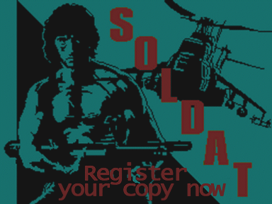
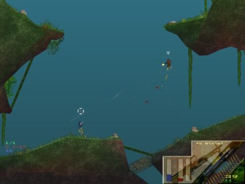

Um Soldat zu registrieren gehe an diese Stelle.
Um die Vorteile des Registrierens zu erfahren, lies einfach weiter.
Was bekommst du fuer das Registrieren von Soldat?
Soldat ist frei zu
spielen aber du solltest das Registrieren in Erwaegung ziehen wenn du
Soldat spielst.
Registrieren ist der richtige
Weg. Es laesst das Spiel leben, da der Autor motiviert bleibt und
weiter dran arbeiten wird.
Der Preis belaeuft sich auf
nur 13.99$ bzw. €.
Also denk darueber nach, wenn du Soldat
spielst.
Außer dem Gefuehl,
was Gutes getan zu haben und zu einem registrierten Mitglied der
Soldat-Community zu werden, bekommst du noch mehr Vorteile. Hier sind
sie:
SPIEL:
BENUTZERDEFINIERTE PROFILE
Gibt dir die Moeglichkeit benutzerdefinierte
Einstellungen in unbegrenzt vielen Profilen zu speichern.
Verschieden Profile geben dir
schnellen Zugriff auf von dir vorgefertigte Spieleinstellungen wie z.B.
Spiel- und Setupoptionen, Servereinstellungen, Spielernamen und
-aussehen deines Soldaten.
Der obere Screenshot zeigt
dir wie das aussehen koennte.
BENUTZERDEFINIERTE INTERFACES

Ändere
das Aussehen, die Position und das Verhalten des Interfaces im Spiel.
Wenn dich das
Standard-Interface langweilt, kannst du es einfach aendern.
Zurzeit
bringt dir Soldat untenstehende Interfaces automatisch mit.
IWenn dir das nicht genug
ist, kannst du einfach Interfaces, die von anderen gemacht wurden,
runterladen oder dein eigenes mit dem Soldat Interface Maker erstellen.
|
|
|
|
|
|
|
|
 |
|
|
|
MP3 SPIELER

Hoer deine Lieblings MP3-Songs mit dem Soldat
MP3-Spieler waehrend des Spiels.
Kopiere einfach die MP3s in
das Soldat 'mp3'-Verzeichnis und kreiere deine eigene Playlist aus
ihnen.

Steuere den MP3-Spieler einfach mit F5 (fuer stop/play) und F6 (naechster Titel) waehrend des Spiels.
UNBEGRENZTE AUFNAHME VON DEMOS
Die nicht-registrierte Version von Soldat erlaubt dir eine Demo aufzunehmen (F8-Taste), allerdings nur fuer 3 Minuten. Die Vollversion erlaubt dir unbegrenzt lange Demos aufzunehmen, so kannst du all deine Schlachten sichern und Filme drehen.
RESOLUTION CHANGE
Non-registered Soldat players can only play the game with the small default resolution 640x480. After registration you can change it to whatever you want, 800x600, 1024x769, 1280x1025, 1600x1200! Bigger resolution means more space for the game. Interfaces, chat texts, kill logs and score boards become small leaving the rest for the gameplay!

KEIN POPUP SCREEN
Nach dem Registrieren hast du eine voll spielbare
Version von Soldat ohne unnoetige Popups oder unnoetigen Texten.
WERDE EIN
EHRENVOLLES MITGLIED DER SOLDAT-COMMUNITY
Sobald du registriert hast wird ein spezielles
Symbol (heller gelber Stern) nahe deinem Namen zum Scoreboard
hinzugefuegt wann immer du Soldat spielst.
So wirst du ein ehrenvolles Mitglied der
Soldat-Community und so wird es auch jeder sehen.

FARBIGE JET-FLAMES
Nur registrierte Spieler haben die Moeglichkeit
individuelle Jet-Flame-Farben zu nutzen. Wenn du nicht willst, dass
immer die gleiche gelbe Flamme aus deinen Kampfstiefeln sprueht:
registriere. Damit wirst du immer erkennbar sein und keiner
wird dich mehr verwechseln, weil nur registrierte Spieler diese Option
haben.


INTERFACE MAKER:
VERÄNDERE INTERFACES
Mit dem Interface Maker hast du die Moeglichkeit
die mitgelieferten Interfaces zu aendern.
Wenn du beispielweise die
Position der Stats nicht magst, kannst du sie einfach verschieben und
deinen persoenlichen Beduerfnissen anpassen.
ERSTELLE DEIN EIGENES INTERFACE
Erstelle dein eigenes Interface! Dazu
gibt es nichts einfacheres als den Interface-Maker.
Wenn du nicht alles machen
moechtest, kannst du auch einfach nur Einiges an den mitgelieferten
Interfaces abaendern.
Weiterhin kannst du auch
benutzerdefinierte Interfaces machen die z.B. nur dein Zielkreuz
aendern, so dass du einfach das Zielkreuz im Spiel austauschen kannst.
Wie kannst du Soldat registrieren?
Es gibt zwei Moeglichkeiten der Zahlung:
|
per PLIMUS Das ist die empfohlene Bezahlmethode. Klicke hier um auf die Plimus
Shareware-Registrierungsseite zu gelangen: |
|
per SHARE-IT Empfohlen fuer europaeische Spieler (billige
Bankueberweisungen,
Deutsch,
Franzoesisch,
Spanisch,
Italienisch
verfuegbar). Klicke hier um auf die
Share-It
Shareware-Registrierungsseite zu gelangen: |
Die
Registrierung kann billiger sein, wenn du fuer einen kompletten Clan
oder mehr als 3 Leute auf einmal registrierst. Bitte kontaktiere mich
fuer weitere Informationen.
Nach der Registrierung bekommst du einen
Registrierungscode in einer Datei (welcher sich nach einem Doppelklick
selber installiert) und dann kannst du die Vollversion von Soldat
nutzen.
Die Registrierung gilt ein
Leben lang (alle zukuenftigen Versionen inbegriffen).
Ich sende dir den
Registrierungscode per eMail innerhalb von ein paar Stunden, nachdem
ich die Zahlmitteilung von DigitalCandle
oder Share-It
erhalten habe.
Wenn es laenger dauert (mehr
als 48 Stunden), kontaktiere mich bitte persoenlich.michal.marcinkowski<AT>gmail.com
Danke.
Deutsche
Version der
Registrierungsseite von systemfeind
wer Rechtschreib- bzw.
Übersetzungsfehler findet oder Vorschlaege fuer
eine bessere Übersetzung (auch an
einzelnen oder kleinen Stellen) hat, darf diese behalten,
oder an
systemfeind@systemfeind.net
schicken. :)


{kind=link}